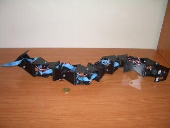

Sigo con los experimentos de mi tesis. Ahora le ha tocado el turno a Hypercube, un robot modular de 8 módulos que construí para estudiar el problema de la locomoción en un plano. Al menos puede realizar los siguientes desplazamientos:
En este vídeo se muestran todos los tipos de movimientos:

y en este otro algunas pruebas de giros:

{kind=link}
Se consigue con este robot un nivel de mimética muy bueno, a mí me dió la impresión de estar viendo algo parecido a una oruga que también posee esos moviemientos espontáneos o tics en las pruebas de giro.
Tienes pensado explorar con sensores en segmentos? para retroalimentación y para medir el entorno, por ejemplo: acelerómetros, hápticos, detector de metales, multi-ojos, intensidad de luz, IR, aerosoles, etc.
Ahora que vais a enfocaros en sensores, había pensado que os vendría muy bien explorar la capacidad de acoplamiento dinámico de n-cubos. Eso permite además obtener una versatilidad formando líneas o curvas de extensión variable para medición paralela en varios puntos, por la facilidad de adaptación en superficies heterogéneas.
Aunque el tamañoo está ideal para experimentar ¿tienes pensado alguna otra versión más reducida en el tamaño de cada cubo?
Ya son muchas preguntas, la úlltima ¿existe alguna edición virtual 3D de hypercube? en el lado OpenSource obviamente, vuestro nuevo dilema ¿no?
Chris.
Hola Chris,
Lo que tiene la investigación es que nunca se acaba 🙂 Y lo peor es que empiezas por algo pequeño y luego aparecen muchísimas líneas diferentes por las que continuar. Es una de las razones por las que me estoy eternizando con la tesis: nunca se puede acabar 😀
Es el caso de Cube. Una línea de trabajo es la que planteas: añadir sensores para interactuar con el entorno y entre ellos mismos. Otras muchas están en las aplicaciones que se le vaya a dar. Ahí un factor importante es el tamaño. Según la aplicación los módulos tendrían que tener unas dimensiones u otras.
La actual línea de investigación es la locomoción de robots modular con topologíasde 1D. No nos centramos en una aplicación concreta, sino en resolver el problema de la coordinación para que estos robots, de M módulos, puedan desplazarse de diferentes maneras. Ahora mismo se podría mover cualquier robot de este tipo, que tuviese cualquier dimensión y cualquier número de módulos M. Como ejemplo de aplicación se han creado Cube Revolutions e Hypercube, pero los resultados se aplican a cualquier robot genérico.
No entiendo bien a qué te refieres con la edición virtual 3D :-(. Lo que hemos creado es un simulador 3D, basado en el Open Dynamics Engine (ODE) que nos permite probar los algoritmos de locomoción en robots de cualquier número de módulos. Tengo pensado poner más adelante un post sobre ello 😉
En cualquier caso, la robótica modular es un tema “APASIONANTE” :-). Esto no ha hecho más que empezar. Hay tantas cosas por descubrir… engloba desde los niveles más bajos (como la locomociṕm) hasta los más altos, relacionados con la neurocomputación, capacidades cognitivas, etc.
Sí, a eso me refería, simulador 3D.
Has tocado un punto clave, neurocomputación y cognitiva. ¿te refieres a las investigaciones de entrar con nano y micro aparatos al flujo sanguíneo? o a la aplicación de las ciencias cognitivas en el diseño de nuevos robots modulares?, o a la integración de interfaces cibernéticas modulares para un control BNCI?
Mi campo no es la neurocomputación. De hecho mis conocimientos son casi nulos 😉 Me referería a las posibilidades de aplicar los modelos obtenidos de las neuronas para aplicarlos en la locomoción de los robots modulares.
Aquí en la Universidad Autónoma de Madrid hay un grupo de neurocomputación (que casualmente está justo al lado de mi laboratorio (¿El destino?) y que se dedican a estudiar cómo funcionan las neuronas de diferentes bichos. Crean modelos de ellas y las simulan… pero ahora pueden ir un paso más allá¡ y probarlas en robots modulares. Uno de los estudiantes de doctorado, Fernando Herrero, está trabajando en los CPGs. Y hace como un mes hicimos unos experimentos de locomoción de Cube Revolutions aplicando sus modelos. Fue interesantísimo. Tengo pendiente poner otro post sobre ello 😉
Pero las posibilidades van más allá¡, como las ideas que has apuntado. Cuando leo cosas de esas me pongo muy nervioso… ¡Hay tanto por hacer y sabemos tan poco!!!!! 🙂